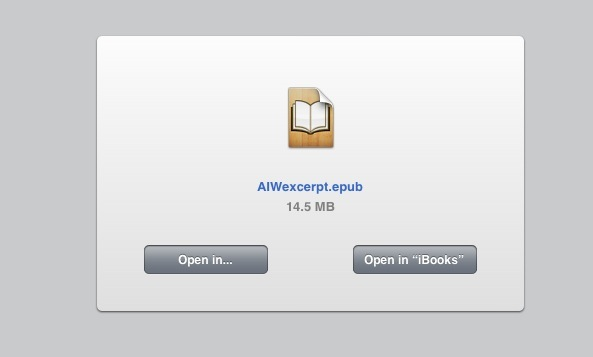
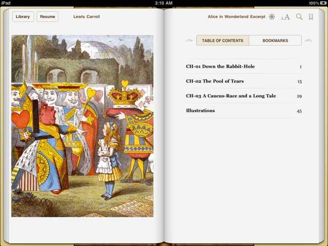
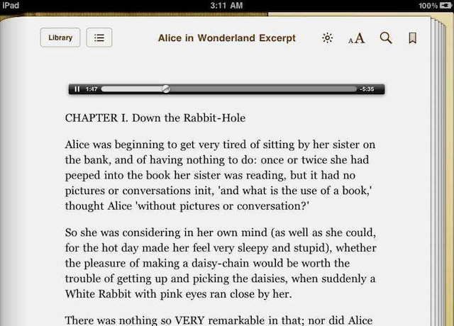
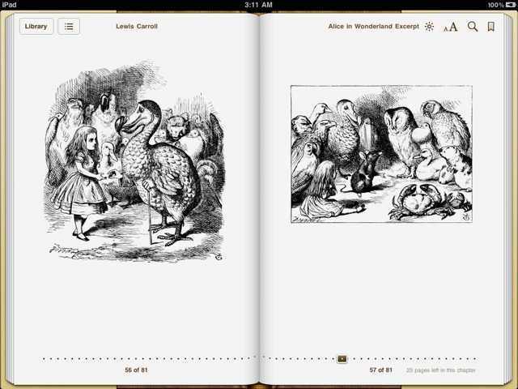

Once the multiple-chapter EPUB document has been created by the system service, it will be opened in the iBooks application.
(⬇ see below ) The EPUB book open in iBooks, with the Table of Contents showing.

(⬇ see below ) The third chapter with the audio clip at the chapter start.

(⬇ see below ) The last chapter containing the illustrations.

Viewing on the iPad
For your convienience, you can download the finished example EPUB book for viewing on OS X by clicking this link.
To view the completed EPUB document on an iOS device such as an iPad or iPhone, view this webpage in Safari on the iOS device, and then tap this link:
- ALICE IN WONDERLAND EPUB (iPad Tap)
OR, you can click the link below to send yourself an email message that contains the link to the finished EPUB document. In Mail on the iOS device, click the link in the message.
- ALICE IN WONDERLAND EPUB (Mail Link)
In the forthcoming dialog, tap the Open in “iBooks” button:

The following images show how the completed EPUB document looks when transfered to the iPad and viewed in iBooks.
The Book Cover. Displayed on the iBooks library shelf (left):

The Table of Contents. Note that the names of the source text files are used as the names of the book chapters:

A Narration Audio Clip. Following the placement option chosen in the Text to EPUB action, the audio file is placed at the beginning of the first chapter:

Illustrations. Facing pages displaying two of the illustrations:
